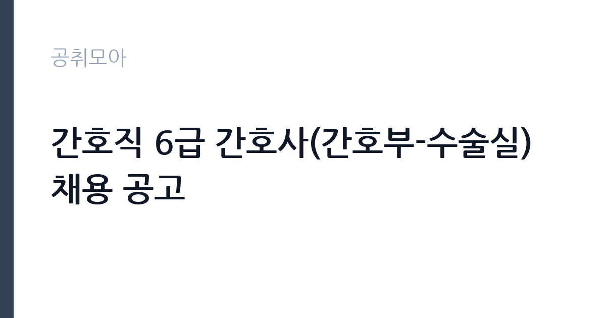

[공공기관] 간호직 6급 간호사(간호부-수술실) 채용 공고
국립중앙의료원 · 서울 · 마감 2026-10-19 (D-15) · 출처 잡알리오

한눈에 보는 모집 조건
| 기관 | 국립중앙의료원 |
|---|---|
| 공고명 | 간호직 6급 간호사(간호부-수술실) 채용 공고 |
| 고용형태 | 정규직 |
| 근무지 | 서울 |
| 게시일 | 2026-10-02 |
| 마감일 | 2026-10-19 (D-15) |
지원자격, 이렇게 읽으세요
- 공공기관 채용공시
- 세부 조건은 원문 공고문 확인
필수 자격은 세 가지입니다. 첫째 간호사 면허증 소지자, 둘째 3교대 근무 가능자, 셋째 종합병원 이상의 의료기관에서 1년 이상 수술실 근무 경력자입니다. 여기서 가장 까다로운 함정이 경력 인정 범위입니다. 의료기관은 건강보험심사평가원 등재 기준 종합병원만 인정되며, 경력증명서상 부서명이나 담당업무란에 수술이라는 문구가 기재된 경우에만 경력으로 인정됩니다. 외래나 병동 경력은 길어도 수술실 경력으로 잡히지 않으며, 증명서에 부서 표기가 모호하면 인정받지 못할 수 있습니다. 지원 전에 경력증명서를 발급받아 문구를 먼저 확인하시고, 이상이 있으면 전 직장에 정정을 요청하십시오.
이 공고의 포인트
국립중앙의료원은 국가 중앙의 공공의료기관으로, 정규직 간호사로 입직한다는 점 자체가 이 공고의 가치입니다. 수술실 경력자를 특정해 뽑는 만큼 이미 수술실 경험을 가진 간호사에게는 경력을 살려 안정적인 공공병원으로 옮길 수 있는 기회입니다. 민간 대형병원 대비 고용 안정성과 육아휴직 사용 자유도가 강점으로 꼽힙니다. 재직자 후기에서는 공공기관치고 급여가 적정한 편이며 분기 단위 보너스가 지급된다는 평가가 있습니다. 수술실 전문성을 이어가면서 워라밸을 챙기고 싶은 분께 맞는 자리입니다.
전형은 어떻게 진행되나
세부 전형 단계와 일정은 원문 공고문에서 확인하셔야 합니다. 공공병원 간호사 채용은 통상 서류 심사와 면접으로 진행되며, 경력직은 실무 경험을 중심으로 검증합니다. 서류 단계에서는 면허와 경력증명서가 핵심 검토 대상이 되므로 증빙을 빠짐없이 준비하십시오. 면접에서는 수술실 실무 대응 능력을 묻는 질문이 나올 가능성이 높습니다. 마감은 10월 19일이므로 경력증명서 발급에 걸리는 시간을 감안해 일주일 전에는 준비를 시작하시기 바랍니다.
원문에서 확인한 전형 방식
[필수] ·간호사 면허증 소지자 ·3교대 근무 가능자 ·종합병원 이상의 의료기관에서 1년 이상 수술실 근무 경력자* * 의료기관: 건강보험심사평가원 등재 기준 종합병원만 인정 * 경력인정 범위: 경력증명서 상 부서명(또는 담당업무)에 ‘수술’이 기재된 경우에만 인정
이런 분께 추천해요
- 종합병원 수술실에서 1년 이상 근무한 경력이 있는 간호사분께 가장 적합합니다.
- 민간병원 교대 근무에 지쳐 공공병원으로 옮기면서도 수술실 전문성을 유지하고 싶은 분께 추천합니다.
- 서울 근무 국립병원 정규직의 안정성과 육아휴직 등 복지 제도를 활용하고 싶은 분께 잘 맞습니다.
지원 전 체크리스트
- 경력증명서상 부서명이나 담당업무란에 수술이라는 문구가 있는지 먼저 확인하십시오.
- 전 근무 병원이 건강보험심사평가원 등재 기준 종합병원인지 확인하십시오.
- 3교대 근무가 가능한지 본인 일정과 체력 조건을 점검하십시오.
- 간호사 면허 상태를 미리 확인하고 서류 접수 마감 전에 증빙을 모두 발급받으십시오.
모집 일정과 제출 타이밍
채용 공고 마감일은 2026년 10월 19일입니다. 경력증명서 발급과 정정 요청에 며칠이 걸릴 수 있으므로 늦어도 10월 12일 전에는 증빙 준비를 시작하시는 것이 안전합니다. 면접 일정 등 이후 단계는 원문 공고문에 안내되어 있으니 원문에서 확인하십시오. 수술이라는 문구 누락을 뒤늦게 발견하면 정정할 시간이 부족해지니 증빙 확인을 최우선으로 하십시오.
직무 이해하기: 공공기관
근무 부서는 간호부 소속 수술실이며 3교대 근무가 전제됩니다. 수술실 간호사는 수술 전후 환자 간호와 수술 중 보조, 수술 기구와 장비 관리, 감염 관리와 소독 업무를 담당합니다. 국립중앙의료원은 중증·응급 환자 비중이 높은 국가 대표 공공병원이어서 수술실 업무 강도가 있을 수 있지만, 그만큼 전문성을 쌓을 수 있는 환경입니다. 구체적인 담당 분야와 근무 편성은 원문 공고문에서 확인하십시오.
자기소개서 작성 팁
지원서에는 수술실 경력을 최대한 구체적으로 적으십시오. 근무 기간과 함께 담당했던 수술 분야, 연간 수술 보조 건수, 맡았던 역할을 숫자로 보여주면 설득력이 높아집니다. 감염 관리나 환자 안전 관련 경험, 응급 상황 대응 사례가 있다면 포함하십시오. 공공병원 지원 동기에서는 국립중앙의료원이 수행하는 공공의료 역할에 대한 이해를 보여주고, 본인의 수술실 전문성이 그에 어떻게 기여할 수 있는지 연결하십시오. 경력 허위 기재는 절대 금물이며 증명서와 일치하게 작성하십시오.
면접 준비 포인트
면접에서는 수술실 실무 질문이 중심이 될 가능성이 높습니다. 응급 수술 발생 시 대응 절차, 감염 관리 수칙, 수술 기구 카운트와 인수인계 같은 기본기를 묻는 질문에 대비하십시오. 3교대 근무와 팀워크에 대한 질문도 예상되니 협업 경험을 사례로 준비하십시오. 이직 사유를 물을 때는 전 직장에 대한 부정적 언급보다 공공의료 기여와 전문성 발전 같은 전향적 이유를 말씀하시는 것이 좋습니다. 간호사로서의 윤리 의식과 환자 안전 마인드도 보여주십시오.
급여·근무조건 읽는 법
이 공고 원문에 보수표가 공개되어 있지 않아 정확한 연봉은 원문 공고문에서 확인하셔야 합니다. 참고로 재직자 후기에 따르면 국립중앙의료원 간호사 급여는 공공기관치고 적정한 수준이며 분기마다 보너스가 지급되고 육아휴직을 자유롭게 쓸 수 있다고 합니다. 다만 이는 재직자 후기상의 평가이므로 기본급과 수당, 상여를 구분한 정확한 수치는 원문과 기관 규정을 기준으로 확인하십시오. 공공병원 간호사 처우는 통상 호봉제와 각종 수당으로 구성되며, 경력이 반영되는 구조인지도 원문에서 확인하시는 것이 좋습니다.
자주 묻는 질문
- 수술실 경력은 어떻게 인정되나요?
종합병원 이상의 의료기관에서 수술실 근무 경력이 1년 이상이어야 하며, 경력증명서상 부서명이나 담당업무란에 수술이라는 문구가 있어야 인정됩니다. 의료기관 인정 기준은 건강보험심사평가원 등재 기준 종합병원입니다. - 6급은 어떤 직급인가요?
국립중앙의료원 간호직 직급 체계상의 직급으로, 정확한 승급 구조와 호봉은 기관 규정에 따릅니다. 원문 공고문이나 기관 인사 규정을 확인하십시오. - 3교대 근무가 필수인가요?
공고문에 3교대 근무 가능자가 필수 자격으로 명시되어 있습니다. 교대 근무가 어렵다면 이번 공고 지원은 어렵습니다.
함께 보면 좋은 공고
[공공기관] 2026년 4차 기간제(보일러운전원(야간))근로자 채용 — 마감 2026-10-17[공공기관] 간호직 6급 간호사(외상센터) 채용 공고 — 마감 2026-10-19[공공기관] 대한적십자사 서울남부혈액원 비정규직 한시적 고령직 근로자 채용 공고(만 60세 이상) — 마감 2026-10-17출처: 잡알리오 공개정보를 바탕으로 공취모아가 정리한 안내글입니다. 모집 조건·일정은 변경될 수 있으니 지원 전 반드시 원문 공고문을 확인하세요. 본 글은 정보 제공용이며 합격을 보장하지 않습니다.